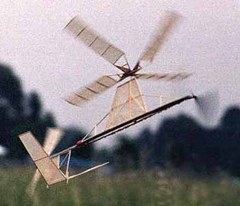

|
I have been playing with these things on and off for years and have got to the point where I can get one to stay right side up and airborne for 30 or 40 seconds pretty consistently. This one flies about 40 seconds most of the time. The rest of the time it does the first part of a split-s and I have to fix a rotor blade.
I do not have a drawing but I do have some "typical" sketches of general configuration and rotor head hinges, etc. Rotor hub uses skewed hinges to reduce blade angle (more negative) as the blades flap up. Pusher prop is on the same motor as the tractor prop in order to cancel rubber roll torque on the airframe. |  |
|
My autogyros are awfully inefficient, and sort of touch to fly, which is why I don't have a real plan.
Maybe some enterprising soul would like to improve on the thing and tackle the AMA wingless autogyro record.
good flying,
|
Copyright 1999, Thayer Syme. All rights reserved